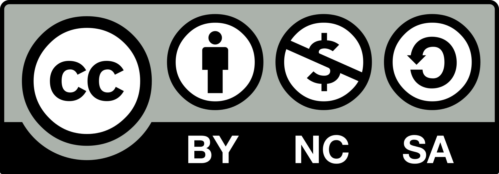

The Open Quant Live Book
2019-01-08
Preface

Description
The book aims to be an Open Source introductory reference of the most important aspects of financial data analysis, algo trading, portfolio selection, econophysics and machine learning in finance with an emphasis in reproducibility and openness not to be found in most other typical Wall Street-like references.
The Book is Open and we are looking for co-authors. Feel free to reach out or simply create a pull request with your contribution on our Github project.
Working Contents
- The Basics
- I/O
- Stylized Facts
- Correlation & Causation
- Algo Trading
- Investment Process
- Backtesting
- Factor Investing
- Limit Order
- Portfolio Optimization
- Modern Portfolio Theory
- Measuring Risk
- Linear Programming
- Machine Learning
- Intro
- Agent-Based Models
- Binary Classifiers
- AutoML
- Hierarchical Risk Parity
- Econophysics
- Entropy, Efficiency and Coupling
- Transfer Entropy, Information Transfer and Causality
- Financial Networks
- Alternative Data
Book’s information
First published at: openquant.netlify.com.
Licensed under Attribution-NonCommercial-ShareAlike 4.0 International.

Copyright (c) 2018. Thársis T. P. Souza. New York, NY.